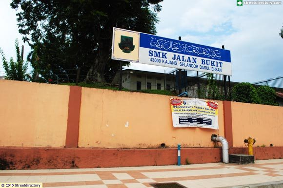

About Me

JACKY WONG JING YI
Jacky W
Hi everyone My name is Wong Jing Yi and many people call me Jacky. I’m from Bechlor in Software Engeering in New Era University College. I’m stay at Kajang and I’m 20 years old.I have try a few jobs before and i hope that in the long term future I can have a change to have an onw business. But with my knowledge of society, I think I will join the system administrator industry when I graduate. Every boy have a dream car and I am no exception. My dream car is Aston Martin Vantage, it is a brand from UK and it is specialized to build a luxury sports cars. Although I don't think I will buy him when I have the ability, I will definitely not miss the opportunity to drive him
My History
The primary school that I study is S J K (C) Sungai Chua. It lacate at Kampung Baru Sungai Chua, Kajang, Selangor It is a very enjoying time at primary school, Don’t have exam or harder work and the life also no need to worry to much.

The Secondary School that i study is S M K Jalan Bukit. It lacate at Kajang Town, Beside New Era University College. In this school i know many of friend that have planning for future.

The favorite food that I most like
I like to eat HotPot. This kind food we can find it in every where expecially in shopping mall.